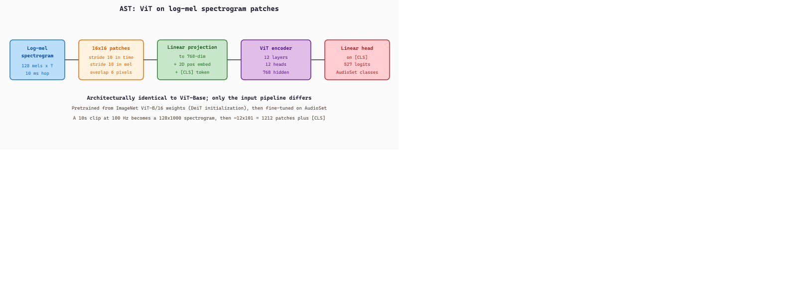
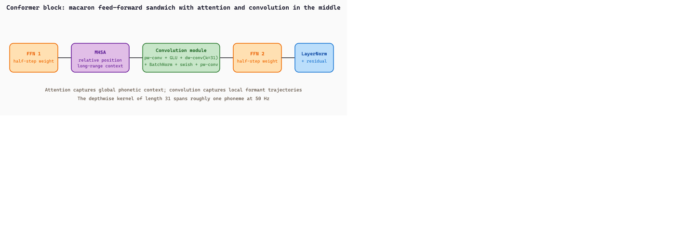

"Take ViT, feed it spectrograms instead of cat photos, and you have an audio classifier. Take BERT, feed it speech instead of sentences, and you have an ASR encoder. Half of audio AI is borrowing the right vision or NLP architecture."
Echo, Pitch-Perfect AI Agent
The transformer architectures that power modern audio AI did not emerge in isolation; they are direct ports of architectures from vision (ViT → AST) and NLP (BERT → wav2vec 2.0 / HuBERT, T5 → Whisper). Two input strategies dominate (raw waveform with a convolutional stem, or log-mel spectrogram treated as an image), three transformer roles cover the field (encoder-only for classification and representation, decoder for autoregressive codec LMs, encoder-decoder for ASR), and one specialized loss (Connectionist Temporal Classification, CTC) lets encoder-only models train on misaligned sequence-to-sequence data. This section installs that taxonomy and walks the reader through the four architectures (AST, Conformer, Whisper, and the generic CTC head on top of wav2vec 2.0 / HuBERT) that show up everywhere in the rest of the chapter.
Prerequisites
This section assumes the reader has finished Section 20.0.1 (waveforms, STFT, log-mel) and Section 20.0.2 (audio codecs and vector quantization), and has read the transformer architecture chapter (Chapter 3) for the encoder, decoder, and encoder-decoder role distinctions reused here.
20.0.3.1 Transformer Role Recap for Audio
The three canonical transformer roles transfer directly from text to audio. An encoder-only transformer maps an input sequence to a sequence of contextual embeddings, with one embedding per input position; the output can be pooled into a classification head (audio event detection, intent classification, language identification) or used as a frozen feature extractor for downstream tasks. AST, wav2vec 2.0, HuBERT, WavLM, BEATs, and the audio encoder inside CLAP all live here. A decoder-only transformer autoregresses tokens; in audio that means predicting the next codec token given previous tokens (Bark, MusicGen, VALL-E, AudioLM, Moshi). An encoder-decoder transformer encodes the input (a spectrogram) into a sequence of contextual embeddings, then a separate decoder autoregresses an output sequence (text transcript) attending to the encoder via cross-attention. Whisper, SpeechT5, and Voicebox use this role; the same role serves the SeamlessM4T speech-to-speech translator.
One useful coarse taxonomy is modality-specific versus multimodal. Modality-specific models like Whisper or AST process audio in, text or label out. Multimodal models like CLAP or Moshi share a single trunk across speech, text, or both. This section focuses on the modality-specific case; Section 20.0.5 covers CLAP, and Sections 20.1 to 20.5 cover the multimodal speech LMs.
20.0.3.2 Two Input Strategies: Waveform vs Spectrogram
Every audio transformer in the book picks one of two input formats, and the choice shapes the rest of the architecture.
Waveform Input with a Convolutional Stem
wav2vec 2.0 and HuBERT consume raw 16 kHz waveforms. A small convolutional feature encoder (typically seven 1D conv layers with strides 5, 2, 2, 2, 2, 2, 2) progressively downsamples the signal and produces a 512-dimensional embedding per 25 ms frame, giving a 50 Hz output rate (320x total downsampling from 16 kHz). The waveform is first normalized to zero mean and unit variance across the input clip. Each conv layer uses GELU activation and layer normalization. The output is then projected to the transformer's hidden dimension and consumed by a standard BERT-style transformer encoder stack.
This route preserves the model's ability to learn its own time-frequency representation. Wav2vec 2.0's feature encoder has been shown by post-hoc analysis to develop something like a mel filterbank in its lower layers and phonetic features in its upper layers, all without being told what either of those things are.
Spectrogram Input as an Image
Whisper, AST, and Conformer skip the waveform entirely and consume a precomputed log-mel spectrogram. The motivation is sequence length: a 30-second clip at 16 kHz is 480,000 samples, which no transformer of practical size can attend over. The standard 80-bin log-mel at 100 Hz reduces this to a $(80, 3000)$ tensor, a 160x compression, which combined with a small convolutional projection (Whisper uses two Conv1D + GELU layers with stride 2 in the second one, halving the length again to 1500) gives a manageable transformer input length.
AST takes the analogy with vision literally. Just as the Vision Transformer (ViT) splits an image into 16 by 16 patches, AST splits the 80 by T log-mel spectrogram into 16 by 16 overlapping patches (with stride 10 in both axes), linearly projects each patch to a 768-dim embedding, adds learned positional embeddings, prepends a [CLS] token, and runs the sequence through a standard ViT encoder. A linear head on top of the [CLS] token then predicts the audio class. The whole AST recipe is literally "ViT on spectrograms" with no architectural changes beyond the input projection. Reader who already knows ViT (Chapter 22) can use AST without learning anything new about the model itself.
The same logic that motivates spectrogram input motivates spectrogram output for generation. A waveform sample needs phase information that the model would have to predict sample by sample (and 24 kHz audio means generating 24,000 phase values per second, far more than any transformer can stably do). Spectrograms are phaseless: each STFT bin is a complex number, but neural TTS models emit only the magnitude, leaving phase reconstruction to a deterministic post-processor (Griffin-Lim) or a neural vocoder (HiFi-GAN, MelGAN). SpeechT5, Tacotron 2, and every diffusion TTS model emit a log-mel and let the vocoder handle the rest; Section 20.1 covers this in detail. The takeaway: outputting spectrograms is the standard recipe, outputting waveforms is the special case that codec LMs (Bark, VALL-E, MusicGen) take only because they delegate the waveform reconstruction to the codec decoder.
20.0.3.3 AST: Audio Spectrogram Transformer
Gong, Chung, and Glass introduced AST (Gong et al., 2021) as the first pure-transformer audio classifier (no convolutional backbone). The recipe in five steps: (1) compute the 128-bin log-mel spectrogram of the input clip (10 ms hop, 25 ms window, like Whisper but with 128 mel bins instead of 80); (2) split the spectrogram into 16 by 16 patches with stride 10 in both time and frequency (so patches overlap by 6 pixels); (3) linearly project each patch to a 768-dim embedding and add a learned positional embedding; (4) prepend a [CLS] token; (5) run through a 12-layer transformer encoder and predict the class from the final [CLS] embedding.
AST is trained on AudioSet (Gemmeke et al., 2017), the 527-class audio event benchmark with about 2 million 10-second clips from YouTube. Class examples range from Speech, Music, Singing, Animal, Tools, Engine, Natural sounds at the coarse top level down to fine-grained classes like Glass, Smoke detector beep, Wind chime, and Cap gun. The released checkpoint MIT/ast-finetuned-audioset-10-10-0.4593 achieves mean average precision of 0.459 on AudioSet's evaluation split (the suffix in the model name is the mAP rounded to four decimals).
Subsequent specialized checkpoints fine-tune the same backbone for narrow tasks: MIT/ast-finetuned-speech-commands-v2 for keyword spotting, plus various community fine-tunes for ESC-50 environmental sound classification, music genre, and so on. Section 20.0.5 walks through how to use these via the HuggingFace pipeline.

The architecture diagram above (Figure 20.0.3.4) makes the "ViT on spectrograms" claim concrete: every box in the pipeline has a one-to-one analogue in a standard image ViT.
AST's patch-token sequence length is computable in closed form from the spectrogram dimensions and the patch stride. For an input clip of duration $T$ seconds at the standard AST 100 Hz frame rate (10 ms hop) with $F = 128$ mel bins, the spectrogram is $F \times 100 T$ pixels. With $16 \times 16$ patches at stride $s = 10$ in both axes, the number of patch tokens (excluding the prepended [CLS]) is
For the canonical AudioSet clip ($T = 10$ s) this gives $12 \cdot 99 = 1188$ patch tokens, plus the [CLS] token for a 1189-token input sequence into the ViT-Base encoder. Self-attention then costs $O(1189^2 \cdot 768) \approx 1.1 \times 10^9$ FLOPs per layer, or about 13 GFLOPs across the 12 encoder layers, comparable to a standard ViT-B/16 on a 224x224 image.
Take a 10-second clip sampled at 16 kHz and the standard AST front-end: 25 ms window, 10 ms hop, 128 mel bins. The number of frames along the time axis is $T_{\text{frames}} = \lfloor (160{,}000 - 400) / 160 \rfloor + 1 = 998$ at the 100 Hz frame rate, which the implementation pads to a round 1000. The log-mel spectrogram is therefore a $128 \times 1000$ image of "pixels". Splitting it into $16 \times 16$ patches with stride $s = 10$ in both axes gives a time-axis count of $\lfloor (1000 - 16)/10 \rfloor + 1 = 99$ patches and a frequency-axis count of $\lfloor (128 - 16)/10 \rfloor + 1 = 12$ patches, for a $T \times F = 99 \times 12 = 1188$ patch grid. Prepending the [CLS] token brings the encoder input to 1189 tokens, each of which is a 768-dim embedding after the linear projection step. The same clip at 8 kHz would halve the spectrogram width and roughly halve the patch count to 600 tokens, illustrating that token budget scales linearly with input sample rate and inversely with patch stride.
import torch, librosa
from transformers import ASTFeatureExtractor, ASTForAudioClassification
# AST fine-tuned on AudioSet (527 event classes), mAP 0.459.
extractor = ASTFeatureExtractor.from_pretrained(
"MIT/ast-finetuned-audioset-10-10-0.4593")
model = ASTForAudioClassification.from_pretrained(
"MIT/ast-finetuned-audioset-10-10-0.4593").eval()
waveform, sr = librosa.load("street.wav", sr=16_000, mono=True)
inputs = extractor(waveform, sampling_rate=16_000, return_tensors="pt")
with torch.no_grad():
logits = model(**inputs).logits # (1, 527)
# AudioSet is multi-label, so apply sigmoid rather than softmax.
probs = torch.sigmoid(logits)[0]
top5 = probs.topk(5)
for score, idx in zip(top5.values, top5.indices):
print(f"{score.item():.3f} {model.config.id2label[idx.item()]}")
# 0.812 Vehicle
# 0.741 Car
# 0.602 Speech
# 0.451 Engine
# 0.388 Outside, urban or manmadeid2label mapping on the model config exposes the 527-class AudioSet ontology in human-readable form; the typical inference cost is $\approx 0.2$ seconds per 10-second clip on a single CPU core, or 0.01 s on a T4 GPU.20.0.3.4 Conformer: Convolution Plus Attention
Gulati et al.'s Conformer (Gulati et al., 2020) remains the dominant architecture for production ASR systems (Google's on-device ASR, Microsoft Azure speech, the Whisper-X family of fine-tunes all use Conformer variants). The motivation is that pure-attention transformers handle global context well but underperform on local acoustic patterns (formant trajectories, phonetic transitions) where small-receptive-field convolutions excel. The Conformer block interleaves both:
- A feed-forward network at half-step weight (Macaron-style structure: feed-forward, then attention, then feed-forward).
- A multi-head self-attention block with relative positional encoding.
- A convolution module: a pointwise convolution that expands to twice the hidden dim, a GLU activation, a depthwise 1D convolution with a kernel size around 31 (long enough to span a phoneme), a batch normalization, and a swish activation, then a pointwise convolution back to the hidden dim.
- A second feed-forward at half-step weight.
- Layer normalization, with residual connections around each sub-block.
The Conformer encoder typically ships in three sizes (S/M/L, 10M/30M/118M parameters) and feeds either a CTC head, an attention-based decoder, or a hybrid RNN-T (transducer) head. ESPnet, NVIDIA NeMo, and SpeechBrain all ship Conformer recipes. Whisper itself does not use a Conformer (it uses a plain transformer with conv stem), but its successors and most production ASR models do.

The exact arithmetic of one Conformer block on an input sequence $x \in \mathbb{R}^{T \times d}$ follows the Macaron sandwich. Each sub-module wraps a residual connection and a LayerNorm:
The two FFNs carry a $\tfrac{1}{2}$ weight (the Macaron coefficient), MHSA uses Transformer-XL relative positional bias so the same kernel applies to any sequence length, and the convolution module expands the inner pipeline as
The depthwise kernel of length 31 is the local receptive field that complements MHSA's global one.
Consider a 2-second utterance fed through a Conformer-M encoder. The front-end produces a log-mel feature map of shape $(T, d_{\text{mel}}) = (200, 80)$ at 100 frames per second, then a stride-2 conv subsampler halves the length to $T = 100$ frames at $d = 256$ hidden channels: the block sees a tensor $x \in \mathbb{R}^{100 \times 256}$.
FFN 1 lifts to a hidden width of $4d = 1024$, applies swish + dropout, projects back to $256$, and is added in with weight $0.5$. The MHSA sub-block uses $h = 4$ heads of width $64$, so the attention matrix is $100 \times 100$ per head and every frame sees the whole utterance. The convolution module first applies a pointwise $1 \times 1$ conv that doubles channels to $512$, splits them into a GLU gate pair (back to $256$), then runs a depthwise 1D conv with kernel $k = 31$: each output frame mixes the surrounding $\lfloor 31/2 \rfloor = 15$ frames on either side, which at the 50 Hz post-subsampler rate covers $\approx 310$ ms, roughly the span of one syllable. BatchNorm + swish + a final pointwise conv close the module. FFN 2 mirrors FFN 1 with weight $0.5$, and a final LayerNorm + residual produces the output $y \in \mathbb{R}^{100 \times 256}$. The 17 stacked Conformer-M blocks repeat this dance, after which a CTC head emits one of 1024 BPE tokens per frame.
The snippet below pairs NeMo's pretrained Conformer-CTC checkpoint with librosa, the standard Python audio library used here only to load and resample the input clip to 16 kHz.
import nemo.collections.asr as nemo_asr
import librosa
# Pretrained Conformer-CTC large (118M params, trained on LibriSpeech + Common Voice + ...).
asr = nemo_asr.models.EncDecCTCModelBPE.from_pretrained(
"nvidia/stt_en_conformer_ctc_large"
).eval()
waveform, sr = librosa.load("clip.wav", sr=16_000, mono=True)
# NeMo accepts a list of file paths or a list of numpy arrays.
transcripts = asr.transcribe(audio=[waveform], batch_size=1)
print(transcripts[0])
# "the quick brown fox jumps over the lazy dog"EncDecCTCModelBPE wraps the Conformer encoder (Figure 20.0.3.3) with a BPE-CTC head and a built-in greedy decoder; swap the checkpoint for stt_en_conformer_transducer_large to get the RNN-T variant where a transducer decoder replaces the CTC head and a small joint network is added on top of the Conformer encoder.20.0.3.5 Whisper: The Encoder-Decoder Reference
OpenAI's Whisper (Radford et al., 2022) is the canonical encoder-decoder ASR transformer. Trained on 680,000 hours of multilingual web audio (compared to wav2vec 2.0's 60,000 hours of English-only LibriSpeech), it ships in five sizes from tiny (39M parameters) to large-v3 (1.55B parameters), with multilingual coverage of 96 languages plus translation to English.
The architecture has two halves. The encoder consumes an 80-bin log-mel spectrogram of shape $(80, 3000)$ for a 30-second clip, projects it through two Conv1D + GELU layers (the second has stride 2, halving the temporal dimension to 1500), adds sinusoidal positional embeddings, and runs the sequence through a stack of transformer encoder blocks (4 layers for tiny, 32 layers for large-v3). The output is a sequence of 1500 contextual embeddings.
Whisper's two halves are not symmetric in attention style. The encoder uses bidirectional self-attention: every spectrogram frame attends to every other frame, including future ones, because the entire 30-second log-mel is available at once. The decoder uses causal (masked) self-attention: each text token can only attend to previously generated tokens, because text is produced one token at a time. This asymmetry is identical to the T5 encoder-decoder template (Chapter 3) and is why Whisper's encoder alone can serve as a feature extractor for non-autoregressive tasks (language ID, classification) while only the full encoder-decoder can produce transcripts.
The decoder is a standard transformer decoder with learned positional embeddings, masked self-attention over previously generated text tokens, and cross-attention to the encoder output. Generation is autoregressive, starting from a sequence of special control tokens that select the task: <|startoftranscript|> begins decoding, then a language tag (e.g., <|en|>, <|fr|>, <|de|>, <|he|>), then a task tag (<|transcribe|> for same-language transcription or <|translate|> for translation to English), then optionally a timestamp token or <|notimestamps|>, then the text tokens, ending with <|endoftext|>. A separate <|nospeech|> branch handles voice activity detection (the model emits this token when the audio contains no speech).
<|startoftranscript|> (SOT) and branches based on which token is generated next. The same parameter set serves transcription, translation, voice activity detection, and timestamped output, controlled entirely by which token sequence is fed to the decoder. This is what makes Whisper a multitask model in the same sense that T5 is multitask: one set of weights, many tasks selected at inference.Feed a 15-second 16 kHz monologue ("The library opens at nine on weekdays and closes promptly at six.") into openai/whisper-small. The pad-or-truncate step lifts the clip to the canonical 30 seconds (480,000 samples), the front-end produces an $80 \times 3000$ log-mel spectrogram, and the two stride-2 convs halve the time axis to 1500 encoder frames. The decoder begins with the four-token prefix [<|startoftranscript|>, <|en|>, <|transcribe|>, <|notimestamps|>] and autoregresses one BPE token at a time. The 13-word output tokenizes to 16 BPE pieces, which together with the four prefix tokens and the terminal <|endoftext|> gives a 21-token decoder run. The full decoded sequence is <|startoftranscript|><|en|><|transcribe|><|notimestamps|> The library opens at nine on weekdays and closes promptly at six.<|endoftext|>, and on a single CPU core generate returns in roughly 1.5 seconds, dominated by the 17 decoder forward passes (each $\approx 90$ ms) and a single encoder pass over the 1500 audio frames ($\approx 200$ ms). The padding to 30 seconds is wasted compute on the encoder but is what allows the same checkpoint to handle any clip up to that length without architectural changes.
Training uses standard token-level cross-entropy on (audio, transcript) pairs with the appropriate control tokens prefixed. Evaluation reports Word Error Rate (WER):
where $S$ is the number of substitutions, $I$ insertions, $D$ deletions in the predicted transcript relative to the ground truth of length $N$ words. The Wagner-Fischer dynamic-programming algorithm computes the minimum-edit alignment in $O(NM)$ time. Whisper large-v3 achieves single-digit WER on most English benchmarks and remains competitive on most of the 96 supported languages, though performance degrades for very low-resource languages.
from transformers import WhisperProcessor, WhisperForConditionalGeneration
from datasets import load_dataset, Audio
import torch
processor = WhisperProcessor.from_pretrained("openai/whisper-small")
model = WhisperForConditionalGeneration.from_pretrained("openai/whisper-small")
ds = load_dataset("hf-internal-testing/librispeech_asr_dummy", "clean", split="validation")
ds = ds.cast_column("audio", Audio(sampling_rate=16_000))
audio = ds[0]["audio"]
inputs = processor(audio["array"], sampling_rate=16_000, return_tensors="pt")
with torch.no_grad():
generated_ids = model.generate(**inputs)
# Decode WITHOUT skipping special tokens so the control sequence is visible.
print(processor.batch_decode(generated_ids, skip_special_tokens=False)[0])
# <|startoftranscript|><|en|><|transcribe|><|notimestamps|> The second in importance
# is as follows. Sovereignty may be defined to be...<|endoftext|>
# Switch to French transcription by setting the language tag.
forced_decoder_ids = processor.get_decoder_prompt_ids(language="fr", task="transcribe")
generated_ids = model.generate(**inputs, forced_decoder_ids=forced_decoder_ids)
print(processor.batch_decode(generated_ids, skip_special_tokens=True)[0])WhisperProcessor + WhisperForConditionalGeneration pair (the higher-level pipeline("automatic-speech-recognition") wraps this and hides the control tokens). Setting skip_special_tokens=False in batch_decode exposes the directed-graph structure from Figure 20.0.3.1 in the output. The forced_decoder_ids mechanism lets the user pin the language tag and task tag to force a specific path through the control-token graph; this is how multilingual ASR and translation are selected at inference.This section introduced Whisper's architecture and control-token vocabulary; the production-focused deep dive (faster-whisper, batched inference, VAD-based chunking, fine-tuning on Common Voice with Seq2SeqTrainer, the Hebrew tokenization bug, long-form chunk-and-stitch) is in Section 20.5. Reader who only needs to use Whisper through HuggingFace can stop here; reader who wants to ship Whisper in a transcription product should also read Section 20.5.
20.0.3.6 Connectionist Temporal Classification
Whisper handles ASR with an encoder-decoder where the decoder generates text autoregressively. The alternative, used by wav2vec 2.0 and HuBERT when fine-tuned for ASR, is an encoder-only model with a Connectionist Temporal Classification (CTC) head, trained with the CTC loss of Graves et al. (2006). The CTC approach is simpler to implement, faster at inference (no autoregressive generation), and lighter on parameter count, at the cost of being non-autoregressive (each frame predicts independently given the encoder output) and giving up the long-range conditioning a decoder provides.
The Misalignment Problem
An ASR model produces one prediction per audio frame (say, every 20 ms after the convolutional stem), but the ground-truth transcript is a sequence of characters or word pieces, and one phoneme typically spans several frames. The mapping from frame predictions to transcript characters is unknown at training time, only the final transcript is known. This is what slide 9 of the encoder deck calls misaligned sequence-to-sequence learning: there is no per-frame label to compute a frame-wise cross-entropy loss against.
The naive fix is to run a separate forced-alignment preprocessor (Montreal Forced Aligner, the Kaldi GMM-HMM pipeline) that assigns each transcript character to a specific frame, but that requires a separately trained acoustic model and breaks end-to-end training. CTC sidesteps this entirely.
The CTC Trick
CTC enlarges the output vocabulary by adding a special blank symbol (often written * or <blank>). The model predicts one symbol per frame from the enlarged vocabulary, and the decoding rule collapses the frame-wise output to a clean transcript by:
- Merging consecutive duplicate symbols into a single occurrence.
- Removing all blank symbols.
For example, the ground-truth transcript "CHAPTER SIXTEEN" might correspond to a frame-wise prediction like "CHAAAAAPTT*ERRR/SS*IX*T*EE*EEN" (where * is blank and / is the word-break or space symbol), which collapses under the rule to "CHAPTER SIXTEEN". The blank symbol is what enables the model to "stay silent" for a frame without inserting a spurious character, and it also separates intentional repeats (the double-L in "HELLO" is represented as H*E*L*L*O with a blank between the two L's so they are not merged).
PyTorch ships the loss as a built-in module that consumes frame-wise log-probabilities and the unaligned target sequence; the implementation runs the forward-backward dynamic program internally so the user never spells it out:
import torch
T, N, V = 50, 1, 28 # 50 frames, batch 1, 26 letters + blank + space
log_probs = torch.randn(T, N, V).log_softmax(dim=-1) # (T, N, V)
targets = torch.tensor([[8, 5, 12, 12, 15]]) # "HELLO" as label IDs
input_lengths = torch.full((N,), T, dtype=torch.long)
target_lengths = torch.tensor([5])
ctc = torch.nn.CTCLoss(blank=0, zero_infinity=True)
loss = ctc(log_probs, targets, input_lengths, target_lengths)
loss.backward() # gradients flow into log_probs
torch.nn.CTCLoss call. The input is $(T, N, V)$ log-probabilities (frames by batch by vocabulary including the blank symbol indexed at blank=0), the target is an unaligned label sequence, and the explicit length tensors handle padded batches. zero_infinity=True clamps the rare case where no alignment exists (input shorter than target). The forward-backward summation is internal; the user only supplies log-probs and labels.Suppose the transcript is "HELLO" (5 characters) and the encoder produces $T = 12$ frame predictions over the vocabulary {H, E, L, O, *} where * is the blank. Consider three frame sequences and trace their collapse:
H H E E L L L * L L O O→ merge repeats:H E L * L O→ remove blanks:H E L L O✓H E E * L L L L L O O O→ merge:H E * L O→ remove blanks:H E L O✗ (lost an L because no blank separated the run)* H * E * L * * L * O *→ merge:* H * E * L * L * O *→ remove blanks:H E L L O✓
The second alignment fails because the two L's collapsed into one. The CTC loss sums probabilities over only the frame sequences that collapse to "HELLO", such as the first and third above. The forward-backward dynamic program traverses an extended label sequence with blanks inserted between every character (* H * E * L * L * O *, length $2|y| + 1 = 11$) and the trellis has at most $T \cdot (2|y|+1) = 12 \cdot 11 = 132$ cells, each computed in constant time. Concretely the model that emits a sharp probability of 1.0 on the first frame sequence above gets $\mathcal{L} = -\log 1.0 = 0$; if it instead spreads probability uniformly over $K = 5^{12} \approx 2.4 \times 10^8$ frame sequences and only $\approx 10^4$ of them collapse to "HELLO", the loss is $-\log(10^4 / 2.4 \times 10^8) \approx 10$, which is the gradient the model uses to sharpen its predictions.
H H E L L * L L * *, which collapses to "HELLO". The forward-backward algorithm computes the sum of probabilities over all such paths in $O(T \cdot |y|)$ time.The CTC Loss
Many different frame sequences collapse to the same transcript (any sequence with the right characters in the right order, separated by any number of blanks and repeats, decodes to "HELLO"). The CTC loss says the probability of the transcript is the sum of probabilities over all valid frame sequences:
where $\pi$ ranges over all $T$-length sequences in the enlarged vocabulary that collapse to $y$ under the decoding rule $B$. The number of such sequences is exponential in $T$, so direct enumeration is infeasible. The forward-backward algorithm (the same dynamic-programming idea that computes hidden Markov model likelihoods) computes the marginal in $O(T \cdot |y|)$ time by maintaining forward variables $\alpha_t(s)$ = "total probability of all paths that reach character index $s$ in the transcript at frame $t$" and analogous backward variables. The gradient with respect to the per-frame logits then flows back through standard automatic differentiation, making CTC end-to-end trainable.
CTC Decoding
At inference the model emits per-frame distributions over the enlarged vocabulary and the decoder needs to find the most likely transcript (not the most likely frame sequence). Greedy decoding picks the argmax symbol per frame and applies the collapse rule, which is fast but ignores the fact that many low-probability frame sequences could sum to a high-probability transcript. Beam search maintains the top-$k$ partial transcripts and their forward probabilities, optionally re-scored by an external language model (a Kenlm n-gram model or a small transformer) to handle long-range linguistic constraints. PyCTCDecode and torchaudio's cuda_ctc_decoder implement production-grade beam search; processor.batch_decode on a wav2vec 2.0 model defaults to greedy.
from transformers import Wav2Vec2Processor, Wav2Vec2ForCTC
from datasets import load_dataset, Audio
import torch
processor = Wav2Vec2Processor.from_pretrained("facebook/wav2vec2-base-960h")
model = Wav2Vec2ForCTC.from_pretrained("facebook/wav2vec2-base-960h")
ds = load_dataset("hf-internal-testing/librispeech_asr_dummy", "clean", split="validation")
ds = ds.cast_column("audio", Audio(sampling_rate=16_000))
audio = ds[0]["audio"]["array"]
inputs = processor(audio, sampling_rate=16_000, return_tensors="pt")
with torch.no_grad():
logits = model(**inputs).logits # (1, n_frames, vocab_size)
# Greedy CTC: argmax per frame, then collapse repeats + remove blanks.
predicted_ids = torch.argmax(logits, dim=-1)
transcription = processor.batch_decode(predicted_ids)[0]
print(transcription)
# "MISTER QUILTER IS THE APOSTLE OF THE MIDDLE CLASSES AND WE ARE GLAD ..."HubertForCTC.from_pretrained("facebook/hubert-large-ls960-ft")) and for any wav2vec or HuBERT model with -ft in the name (the -ft indicates the model was fine-tuned for ASR; the base un-finetuned models are feature extractors only). The processor's batch_decode applies greedy CTC decoding; swap in pyctcdecode for beam search with an n-gram language model.20.0.3.7 Summary: Picking an Architecture
Four architectures cover almost every audio task in the rest of this chapter. AST handles audio classification (events, intents, KWS, genres) with a ViT-style spectrogram encoder. Conformer handles production ASR with a conv-plus-attention hybrid, paired with either a CTC head or an attention decoder. Whisper handles multilingual transcription, translation, and timestamping with a single encoder-decoder controlled by special tokens. wav2vec 2.0 / HuBERT with a CTC head handles ASR when a smaller, faster, non-autoregressive model is preferred and when the next section's self-supervised pretraining gives a starting checkpoint. The next section dissects the self-supervised pretraining that underlies wav2vec 2.0, HuBERT, WavLM, and BEATs in detail.
I once spent a sprint planning how to add French-to-English translation to a Whisper pipeline, drafting custom loss functions and lining up parallel corpora. On day three a teammate showed me the <|translate|> control token. The same parameter set already did the job, no training needed. The next sprint I built the Hungarian-to-English path by typing <|hu|>. Some days the cleverest thing you can do is read the model card. An AI Model Who Underestimated Multitask Training
Audio transformers come in two input flavors (raw waveform with conv stem, log-mel spectrogram as image) and three role flavors (encoder-only for classification and feature extraction, decoder-only for codec LMs, encoder-decoder for ASR). AST is ViT on log-mel spectrograms. Conformer is the conv-plus-attention hybrid behind most production ASR. Whisper is the encoder-decoder reference, with a multitask vocabulary of control tokens that selects transcription versus translation versus VAD versus timestamps. CTC is the alignment-free loss that turns any encoder into an ASR model by predicting blank-separated character sequences and marginalizing over alignments via the forward-backward algorithm. Word Error Rate is the standard evaluation metric: $\mathrm{WER} = (S + I + D) / N$.
Objective. Exercise the Whisper multitask interface: same weights, different control tokens, different behavior.
Task. Install transformers and librosa. Load WhisperProcessor.from_pretrained("openai/whisper-small") and the matching model. Pick a 10 to 30 second non-English speech clip (Common Voice or any local recording). Run three forward passes: (a) language auto-detect + transcribe, (b) language forced to the correct language + transcribe, (c) language forced to source + task forced to translate to obtain an English translation. Report the three outputs side by side.
Stretch. Use return_timestamps=True and visualize the per-segment timestamps on the waveform with vertical lines. Measure word-level alignment quality on a clip with hand-labeled timing.
What Comes Next
Section 20.0.4 opens up the wav2vec 2.0 / HuBERT half of the architecture roster and explains how they get pretrained without any labels: contrastive (wav2vec 2.0) versus masked-cluster-prediction (HuBERT) versus utterance-mixing-augmented (WavLM) versus self-distilled-tokenizer (BEATs). After that, Section 20.0.5 brings the classification recipe full circle with the AST inference pattern, CLAP zero-shot, and a DistilHuBERT supervised fine-tune.